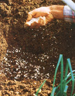
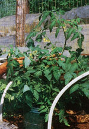

Super-Early Tomatoes
January/February 1986
How would you like to enjoy your own vine-ripped beauties weeks ahead of anyone else?
By Bob Kornegay
What do the Kentucky Derby and the tomato have in common? That's easy: big stakes for those who come in first. Or, at times, big steaks -during my first year working at MOTHER, I won a steak dinner for growing the earliest ripe tomato at the Eco-Village. Now, I admit I used devious tactics in that contest: I grew a Sub Arctic Plenty (fast-maturing but pitiful-tasting) and stressed the vine into premature production by raising it in a five-inch pot. The poor plant bore only two fruits, but as far as I was concerned, the prize dinner-and beating the other staff gardeners-was reward enough for my efforts.
You may not be planning on making any garden wagers this year yourself, but I'm sure you've tasted enough orange baseballs-excuse me, supermarket tomatoes-already this winter to be longing for that first precious vine-ripened fruit. Tomatoes are without a doubt the one garden crop worth taking the time and trouble to bring in early. And early tomato harvesting may be more than a matter of culinary craving. In some areas planning for an early payoff may mean the difference between ever tasting a real tomato and being permanently stuck with grocery store globes . . . while down in the Deep South, starting early might give you a good harvest before the weather gets too hot for the plants to set fruit. In addition, I like to start my heirloom varieties early so I can get their harvest before the summer heat and humidity promote verticillium wilt in those disease-susceptible specimens.
Whatever your reasons, the following tips should help you do the trick. Now, I'll admit that breeding a crop of super-early tomatoes will require extra horticultural effort, but, believe me, it can be done. (And you don't have to have a greenhouse, either!)
JUMPING THE GUN: READY...
The process starts in the middle of winter. Since you'll be growing plants indoors under less than optimum conditions (less light and lower temperatures), you can expect each growing stage to progress somewhat more slowly than normal. In our western North Carolina mountain climate (zone 6), I start my "super earlies" between late December and mid-January.
You'll almost certainly be starting your tomatoes from seed-what nursery carries transplants in the middle of winter? But that's all to the good, since it'll enable you to carefully select the variety you want to grow. Of course, that choice will be a matter of personal preference, but, in my opinion, if you're going to go to all the trouble of nursing a special tomato crop, you should give flavor a high priority. Thus, I wouldn't go for a supershort-season variety like Siberia: It comes in early, all right, but it doesn't taste good. On the other hand, you probably don't want to go for a long-season, giant, indeterminate specimen, either: Save the Big Boys for the main summer crop.
My own palate-pleasing choices are Small Fry VFN (60 days: widely available-actually, this good-sized bush variety is the only hybrid tomato I grow anymore), Tiny Tim (55 days: from W. Atlee Burpee Co., Riverside, CA 92502; Clinton, IA 52732; Warminster, PA 18974), Tappy's Finest (77 days: from Southern Exposure Seed Exchange, P.O. Box 158, North Garden, VA 22959), and a compact beefsteak like Bush Beefsteak (62 days: from Alberta Nurseries & Seeds, Ltd., Box 20, Bowden, Alberta, Canada TOM 0K0). The first two are relatively fast-growing, while the last two have larger fruits. Just grow one or two plants of each variety you pick; you'll get plenty of other tomatoes with your main crop later on .
...SET...
Your plants will require at least eight hours of good light a day, so plan to keep them near a good-sized south-facing window, in a small sunspace, or under a good grow light (such as the type commonly used for African violets).
Start your seeds in a flat, a 6" pot, or a 10" hanging basket. You can buy a good nursery mix or create your own. (I recommend a mix of five parts leaf mold, milled sphagnum moss, or peat moss; four parts good topsoil; and two parts sharp sand. You can add one to two parts compost if you wish.) Your mix must have good texture to withstand the compaction caused by constant watering. In fact, if you intend to keep your plants in containers to maturity, you should definitely use a good commercial potting soil-which is specially prepared to stay loose and porous-or follow the advice I gave last issue in my article "Organic Container Growing."
. . . GROW!
Once your seeds have germinated and set out their first true leaves, prick the seedlings out to a slightly deeper flat or put each one in a 6" pot. (Place some extra compost and crushed eggshells, for calcium, in the bottom of the container before transplanting.)
Keep your plants warm; the nighttime temperature should get no lower than 55°F. Heat tape under the bottom of your pot or flat can be a big help. And keep them well watered: Container-grown tomatoes tend to get very thirsty.
When your plants are fairly well developed-wider than they are tall, with healthy, thick stems-they're ready to be moved to yet another, larger container. At this point, they should be about the same size as (or slightly bigger than) the greenhouse starts people buy at garden stores. The main difference will be that your plants should reach this stage a month or more before your last frost date, instead of a week or two after!
Your young vines may now even have some flowers. If you're growing super dwarfs like Tiny Tim and Pixie (52 days: Thompson and Morgan, Inc., P.O. Box 100, Farmingdale, NJ 07727), you can leave the blooms alone; but if you're raising larger varieties, remove those premature blossoms.
You'll move any dwarf cultivars to 8" or 10" final pots and the larger ones to 2-gallon containers. Either way, add some crushed eggshells, compost, and supplemental fertilizer to your soil mix (I like Earthrite C, available from Zook & Ranck, Rt. 1, Gap, PA 17527) and place some extra shells and compost in the bottom of each pot. Plant your two-gallon vines deeply to encourage extra root development.
Determinate varieties will soon start making lots of blossoms. Help them to set fruit by gently vibrating each flower with a pencil or small brush. (Tomatoes are self-pollinating; the shaking will help the pollen grains inside a bloom's anther reach the flower's stigmaand hence, ovary.) Try to treat each bract of flowers, especially if your plants are indoors, where pollinating insects can't get to them. You should do this once a day, preferably between about 11:00 A.M. and 3:00 P.M.
You'll also need to stake your indeterminate plants. I use a 3/4" X 1" X 36" stick, inserted to the bottom of the pot along one side.
THE FINAL SPOT
What you'll do next will depend on where you want your plants' final homes to be. If you're going to keep them in containers, just continue what you've been doing. You'll probably want to fertilize the soil-not the foliage-regularly with a weak seaweed, fish, manure, or compost solution. (And if you're desperate to hasten their ripening, you can do a little root pruning when several green fruits are close to being ripe: Cut a third or half circle seven inches deep into the soil about three inches out from the stem.)
On the other hand, if you're going to move your plants to your regular garden, you'll need to harden them off. Most likely, by this time the weather will be warm enough for you to set out the pots in a protected spot on the south side of your house during the day and bring them in at night. About ten days before transplanting, start exposing the vines to some cooler night air-but bring them in if there's a possibility of frost! You can put them in the ground for good immediately after your area's last frost date (though it's better to wait a week or two longer).
All these tips will definitely help you raise an early crop, but you can push your tomato harvest up even further if you make a few special efforts. Essentially, anything you can do to warm up that cold spring soil will help. So keep your plants near a south wall (especially a light-reflecting white wall) . . . lay black plastic across their growing bed to help heat the ground . . . or put corrugated plastic or a homemade cloche over them.
The same low-cost cloches Susan Glaese and I recommended in issue 95 for fall greens (in our article "Extending the Season") work wonderfully for protecting spring tomatoes. In fact, I built a south-facing, cloched rock bed at MOTHER's self-reliant homestead for just such purposes. (I also use it to grow allwinter spinach and extra-early Chinese cabbage.) Last spring, I put my tomatoes straight in that plant shelter two weeks after the last frost date-the bed was so well sheltered that the 'maters never needed hardening off!
BLT BLISS
They say that here in these hills, you're doing good if you have any ripe tomatoes by the Fourth of July. Last summer, we ate our first bacon, lettuce, and tomato sandwiches on June 14. And those were made with good, ripe tomatoes!
You know, you can't beat red, vine-ripened tomatoes. And, with a little work, you can ear them a lot earlier than you ever expected to!
EDITOR'S NOTE: A good in-depth book on tomato horticulture is Ortho's All About Tomatoes, available for $5.95 plus $1.00 shipping and handling from Ortho Information Services, 742 Bancroft Way Berkeley, CA 94710.
|
LEFT: MARCH 1985: Bob waters his carefully tended super-early tomato crop inside MOTHER'S selfreliant homestead. If you look closely, you'll see that the tray in front of Kornegay contains his justsprouted spring brassica seedlings . . . yet the tomatoes are almost a foot tall! MIDDLE: APRIL 1985: By now-a month before they'll be set out- each tomato has its own two-gallon pot. Bob buries the containers in his (heated) greenhouse soil to help keep the plants' roots warm. (The red ball in the foreground is part of a sail thermometer.) RIGHT: MAY 1985: Since the plants are being started indoors away from pollinating insects, Bob has to handpollinate any blossoms that appear. Fortunately, this is an easy task . . . all it requires is regularly vibrating each flower with a pencil or small brush. |
 MAY 1985: Before transplanting, Bob sprinkles crushed eggshells and compost (not shown) in the holes for the tomatoes. |
 MAY 1985: The large vines were well protected from cold in their final clocked rock bed home. |
|
 |
|
|